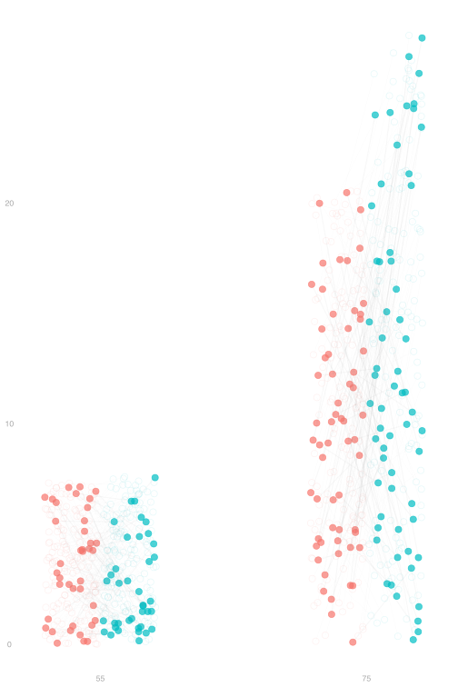
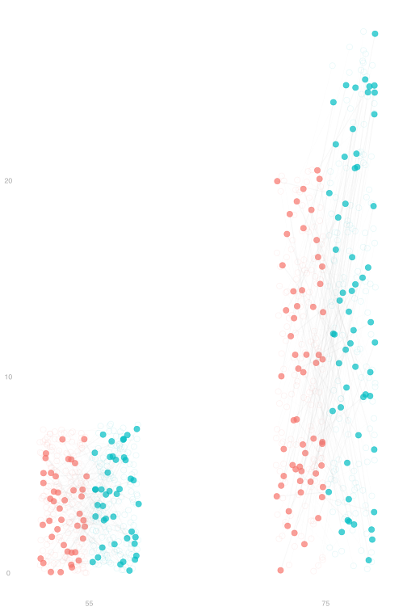
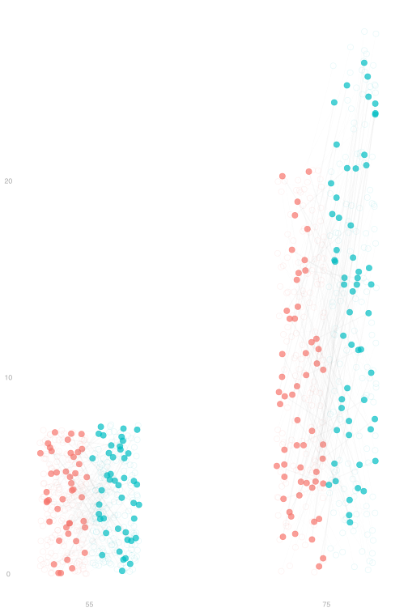
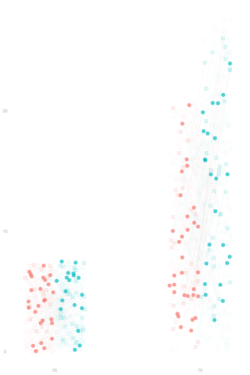
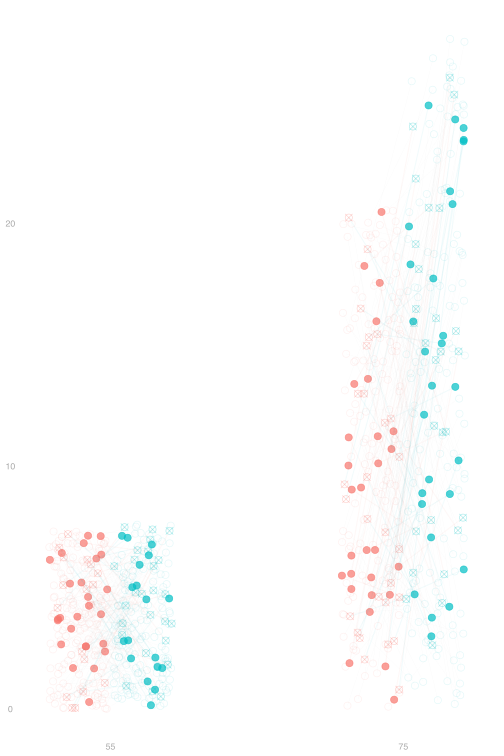
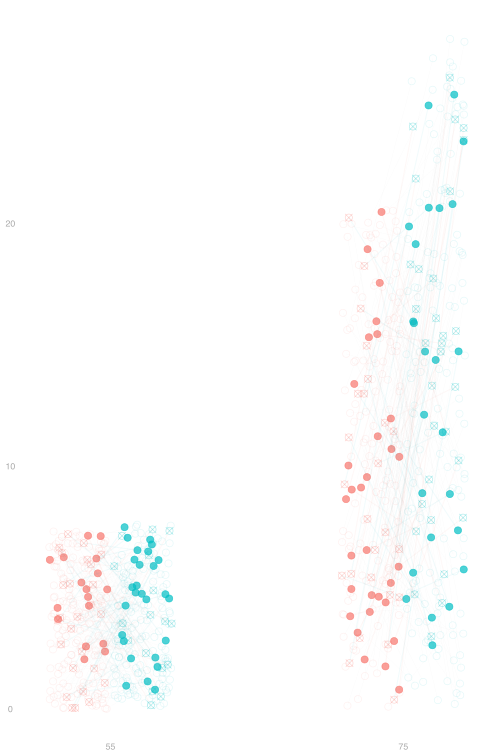

Potential Outcomes and Causality
A Campaign Finance Example
$$ \newcommand{X}{} \newcommand{Y}{} % A hex digit after # inside a macro body is eaten by build-time expansion, so digit-leading hexes spell # via .
$$

- Let’s think back to the 2006 Michigan Primary we discussed in our first lecture.
- But instead of mailing letters to increase turnout, we’re trying to get donations.
- We have a population of potential donors: a list of people who donated in 2004.
- We’re considering two ways of contacting them: an email or a phone call.
- We run a pilot study in which we …
- Sample without replacement to select 4000 potential donors from our list
- Flip a coin for each one to choose between an email or call.
- Contact them as dictated by the coin and record their donation.
- The results, broken down by the donor’s age, are shown above.
Randomization and Sampling







- We start with two potential outcomes for each person in our population.
- Those are the connected dots we see in the plot.
- Then we sample from our population.
- The people who aren’t sampled fade out in the plot.
- This is random. So different things happen each time we do it.
- Each person in our sample flips a coin to determine whether they’re treated.
- ⦻ marks the potential outcomes that don’t happen.
- This is random, too.
Unbiasedness

- This identification result reduces today’s unbiasedness question to one we’ve addressed before: the unbiasedness of column means.
\mathop{\mathrm{E}}[\hat\mu(w)] \overset{\texttip{\small{\text{?}}}{unbiasedness of column means}}{=} \mu(w) \overset{\texttip{\small{\text{?}}}{identification}}{=} \mathop{\mathrm{E}}[Y_i(w)]
- When we addressed that in Lecture 6, we assumed pairs (W_i,Y_i) were sampled with replacement.
- We’re being more general here, so I’ll give you a direct proof of unbiasedness too. It’s very similar to Lecture 6’s.
\begin{aligned} \mathop{\mathrm{E}}\sb*{\frac{1}{N_w}\sum_{i:W_i=w} Y_i } &\overset{\texttip{\small{\text{?}}}{via the law of iterated expectations}}{=} \mathop{\mathrm{E}}\sb*{ \mathop{\mathrm{E}}\sb*{ \frac{1}{N_w}\sum_{i=1}^n Y_i \mid W_1 \ldots W_n} } \\ &\overset{\texttip{\small{\text{?}}}{linearity of conditional expectation}}{=} \mathop{\mathrm{E}}\sb*{ \frac{1}{N_w}\sum_{i=1}^n \mathop{\mathrm{E}}[Y_i \mid W_1 \ldots W_n] \ 1_{=w}(W_i) } \\ &\overset{\texttip{\small{\text{?}}}{indicator trick}}{=} \mathop{\mathrm{E}}\sb*{ \frac{1}{N_w}\sum_{i=1}^n \mathop{\mathrm{E}}[Y_i(w) \mid W_1 \ldots W_n] \ 1_{=w}(W_i) } \\ &\overset{\texttip{\small{\text{?}}}{irrelevance of independent conditioning variables. The assignments $W_1 \ldots W_n$ are independent of $Y_i(w)$. }}{=} \mathop{\mathrm{E}}\sb*{ \frac{1}{N_w}\sum_{i=1}^n \mathop{\mathrm{E}}[Y_i(w)] \ 1_{=w}(W_i) } \\ &\overset{\texttip{\small{\text{?}}}{via linearity, i.e. pulling out the constant $E[Y_i(w)]$}}{=} \mathop{\mathrm{E}}[Y_i(w)] \mathop{\mathrm{E}}\sb*{ \frac{1}{N_w}\sum_{i=1}^n 1_{=w}(W_i) } = \mathop{\mathrm{E}}[Y_i(w)]\frac{N_w}{N_w} = \mathop{\mathrm{E}}[Y_i(w)] \\ &\overset{\texttip{\small{\text{?}}}{sampling uniformly-at-random}}{=} \frac{1}{m}\sum_{j=1}^m y_j(w) \end{aligned}
The Idea

- To make things simple, let’s look at a subset of our population.
- We have grouped everyone by age to give us two age groups—a binary covariate.
- As before, everyone has two potential outcomes— treated and untreated.
Covariate Shift in the Whole Dataset

\color{gray} \begin{aligned} \hat\Delta_{\text{raw}} &= \textcolor{#00BFC4}{\frac{1}{N_1} \sum_{i:W_i=1} Y_i} - \textcolor{#F8766D}{\frac{1}{N_0} \sum_{i:W_i=0} Y_i} \\ &= \sum_x \textcolor{#00BFC4}{P_{x|1}} \ \textcolor{#00BFC4}{\hat\mu(1,x)} - \sum_x \textcolor{#F8766D}{P_{x | 0}} \ {\textcolor{#F8766D}{\hat\mu(0,x)}} \\ &= \underset{\text{adjusted difference} \ \hat\Delta_1}{\sum_x \textcolor{#00BFC4}{P_{x|1}} \{\textcolor{#00BFC4}{\hat\mu(1,x)} - \textcolor{#F8766D}{\hat\mu(0,x)}\}} + \cb*{\underset{\text{covariate shift term}}{\sum_x \textcolor{#00BFC4}{P_{x|1}} \ \textcolor{#F8766D}{\hat\mu(0,x)} - \sum_x \textcolor{#F8766D}{P_{x|0}} \ \textcolor{#F8766D}{\hat\mu(0,x)}}} \end{aligned}
Footnotes
This is inconsistent with everyday use of the term treatment because you can, e.g., take both ibuprofen and acetaminophen. In potential outcomes language, we’d say that ibuprofen alone, acetaminophen alone, and ibuprofen plus acetaminophen are three different treatments.
This is sort of like a sampling-without-replacement version of flipping a coin for each individual. The marginal probability of treatment is the same (1/2), but treatments for different individuals aren’t independent like they would be if we flipped a coin. We could flip coins instead, but we’d wind up treating everybody or nobody sometimes, especially when our population is small.
Some people prefer to say ‘randomization distribution’ in this context because we’re not sampling in individuals from our population—we get a dot for each one.
Why? If we draw a sample of the same size as the population without replacement, we get the whole population.
Conditional independence is a new term. We’ll define it shortly.
There are other ways, e.g. making a deck of cards for each age group, shuffling them, and treating the top N_{w,x} cards on each deck.